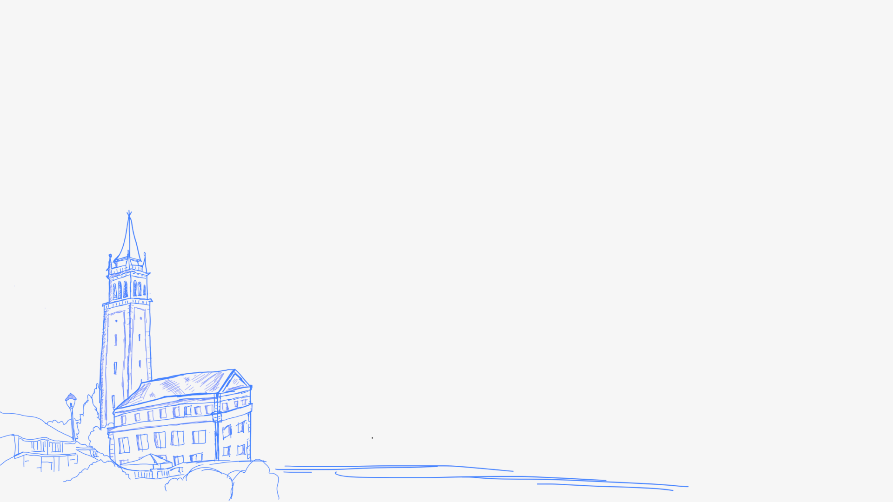
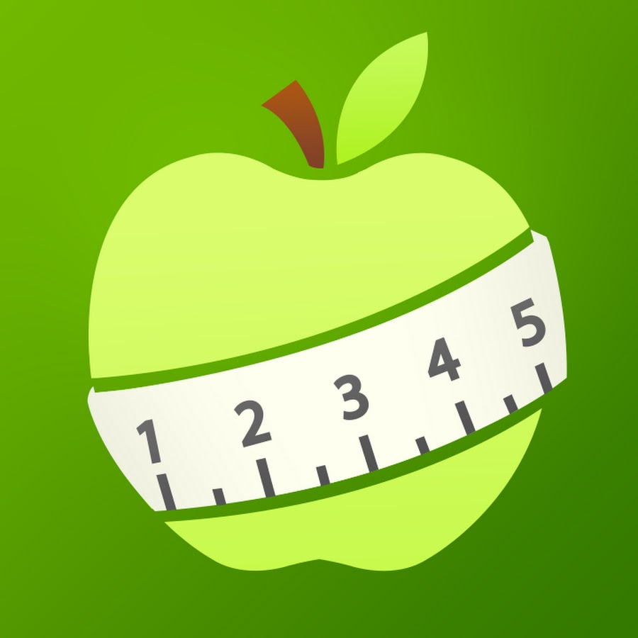
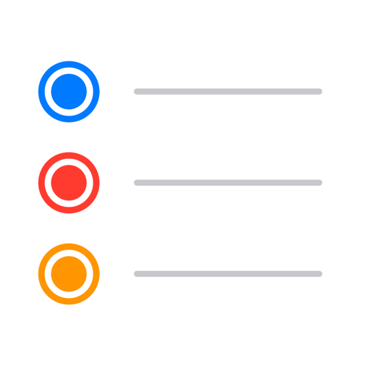

early 8am, what should i do?
Cued checks your sleep and builds the day's session before you're out of bed.
slept 5h, you've got lab till 6.
25min upper push at the rsf. easy day 💪

Your personal fitness coach.
No app. No downloads. Just texts. Just for you.
let's be honest — sticking to your fitness goals as a college student is hard. between class, work, midterms, and trying to have a life, the gym is usually the first thing that drops.
we know because we're students too. and we got tired of juggling four different apps just to keep a workout streak going.
so we built cued. a coach you text. it reads your week — sleep, schedule, what's around you — and tells you exactly what to do next. no app. now downloads. no $200-a-month coach.
Built at Berkeley, by students, for students.
no app to download. no new account. you just text cued like you'd text a friend who happens to know what they're doing — and it handles the rest.
you don't have to ask. cued sees what's coming up and texts you the right thing at the right time.
Stop juggling apps.

MyNetDiary
RemindersOne number. From your dorm, the library, the gym floor — wherever.
Cued's already loaded below. Scroll through a few real moments, tap a question, or type your own.
Cued is in open beta. Free while we're early. Cancel by replying "stop" any time.
Join the waitlist → FAQs ↓The stuff people ask before they sign up.